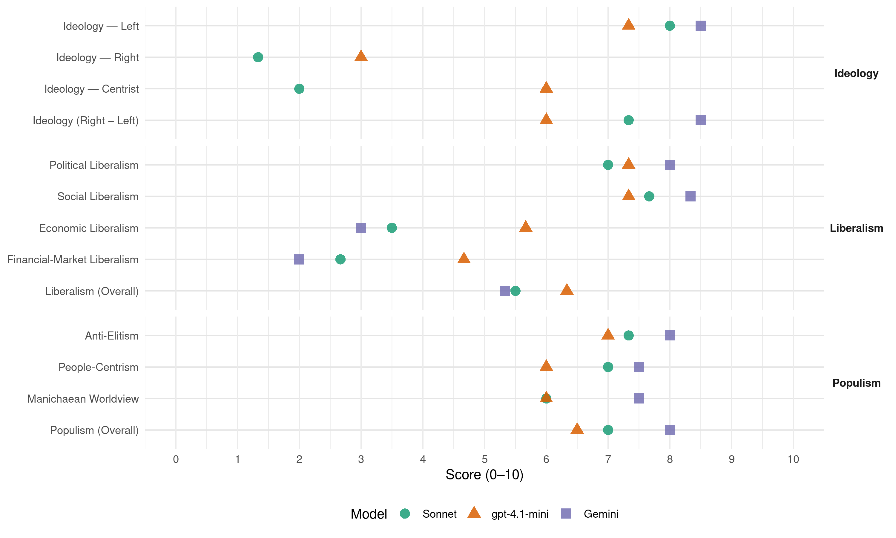

(Mexico, 2012)
manifesto_id 171035_201207
Get full text: This site shows derived annotations and short verbatim quotes only. The full manifesto text is © Manifesto Project / WZB — obtain it via manifesto-project.wzb.eu using the manifesto_id above.
Headline scores
| Dimension | Sonnet | gpt-4.1-mini | Gemini |
|---|---|---|---|
| Populism (Overall) | 7.0 | 6.5 | 8.0 |
| Anti-Elitism | 7.3 | 7.0 | 8.0 |
| People-Centrism | 7.0 | 6.0 | 7.5 |
| Manichaean Worldview | 6.0 | 6.0 | 7.5 |
| Ideology (Right − Left) | 7.3 | 6.0 | 8.5 |
| Liberalism (Overall) | 5.5 | 6.3 | 5.3 |
| Political Liberalism | 7.0 | 7.3 | 8.0 |
| Social Liberalism | 7.7 | 7.3 | 8.3 |
| Economic Liberalism | 3.5 | 5.7 | 3.0 |
| Financial-Market Liberalism | 2.7 | 4.7 | 2.0 |
Evidence per dimension
Economic Liberalism
Gemini · score 3.0 · verified · chunk 1
“prohíbe la existencia de monopolios”
No será letra muerta el artículo 28 constitucional que prohíbe la existencia de monopolios. Por prácticas monopólicas los mexicanos pagamos más
Gemini · score 3.0 · verified · chunk 2
“irresponsable poner la educación al libre mercado”
neoliberal en lo educativo ha significado dejar sin la posibilidad de estudiar a 300 mil jóvenes cada año. Ha sido irresponsable poner la educación al libre mercado como si se tratara
Gemini · score 3.0 · verified · chunk 3
“Revisar y renegociar el TLCAN”
Debe revisarse el Tratado de Libre Comercio. … Revisar y renegociar el TLCAN en todos los aspectos que sean convenientes
gpt-4.1-mini · score 5.0 · verified · chunk 1
“abrir la competencia en la telefonía, Internet, la televisión, el cemento, los bancos”
…42. No será letra muerta el artículo 28 constitucional que prohíbe la existencia de monopolios. Por prácticas monopólicas los mexicanos pagamos más por bienes y servicios que en otros países del mundo. Abrir la competencia en la telefonía, Internet, la televisión, el cemento, los bancos…
gpt-4.1-mini · score 6.0 · verified · chunk 2
“promover la actividad económica y no solamente para sostener la administración pública”
Las reformas fiscales deben servir para promover la actividad económica y no solamente para sostener la administración pública.
gpt-4.1-mini · score 6.0 · verified · chunk 3
“fomento de la competitividad, de la productividad y la promoción”
482. Aumentar la capacidad exportadora del país no solamente con acuerdos de libre comercio, sino mediante el fomento de la competitividad, de la productividad y la promoción de los productos mexicanos en el exterior.
Sonnet · score 3.0 · verified · chunk 1
“No debe haber monopolios”
No debe haber, bajo ninguna consideración, monopolios. Asimismo, se promoverán las radiodifusoras y televisoras locales y regionales
Sonnet · score 4.0 · verified · chunk 2
“poner la educación al libre mercado como si se tratara de una mercancía”
Ha sido irresponsable poner la educación al libre mercado como si se tratara de una mercancía. Esto ha causado, como lo estamos viendo, un tremendo daño social.
Sonnet · score 4.0 · mixed · chunk 3
“Revisar y, en su caso, renegociar los tratados de libre comercio”
Revisar y, en su caso, renegociar los tratados de libre comercio vigentes, bajo los siguientes principios: equidad de condiciones en las relaciones económicas
Financial-Market Liberalism
Gemini · score 2.0 · verified · chunk 1
“administran empresas del capital financiero”
Reformar los sistemas de pensiones para promover una política de inversión en infraestructura con los fondos que actualmente administran empresas del capital financiero. De esta manera un 50% de los fondos
Gemini · score 2.0 · verified · chunk 2
“no se continuará privilegiando la especulación financiera”
337. Cambiaremos la actual política económica. Habrá crecimiento a partir del impulso a las actividades productivas y no se continuará privilegiando la especulación financiera.
Gemini · score 2.0 · verified · chunk 3
“gravamen sobre las transacciones financieras”
flujos mundiales de capital mediante el establecimiento de un gravamen sobre las transacciones financieras (impuesto Tobin) y el establecimiento
gpt-4.1-mini · score 4.0 · verified · chunk 1
“transparentar los recursos del INFONAVIT, con el fin de impedir la manipulación financiera”
…231. Transparentar los recursos del INFONAVIT, con el fin de impedir la manipulación financiera y la canalización de los recursos a favor de grupos empresariales y empresas de los líderes sindicales y funcionarios.
gpt-4.1-mini · score 5.0 · verified · chunk 2
“revisar y reordenar todo el sector de intermediación financiera”
Revisar y reordenar todo el sector de intermediación financiera, ya que actualmente el sistema bancario financia a un alto precio el consumo y en menor medida a la vivienda, pero no da créditos a las empresas productivas, las cuales se ven obligadas a depender de los proveedores.
gpt-4.1-mini · score 5.0 · verified · chunk 3
“establecimiento de un gravamen sobre las transacciones financieras (impuesto Tobin)”
478. Promover la regulación internacional de los flujos mundiales de capital mediante el establecimiento de un gravamen sobre las transacciones financieras (impuesto Tobin) y el establecimiento de reglas internacionales de comercio que compensen las disparidades entre naciones.
Sonnet · score 3.0 · verified · chunk 1
“fondos que actualmente administran empresas del capital financiero”
Reformar los sistemas de pensiones para promover una política de inversión en infraestructura con los fondos que actualmente administran empresas del capital financiero. De esta manera un 50% de los fondos continuarán en las Afores y el otro 50% restante los manejará el Estado
Sonnet · score 3.0 · verified · chunk 2
“impuesto Tobin”
regulación internacional de los flujos mundiales de capital mediante el establecimiento de un gravamen sobre las transacciones financieras (impuesto Tobin)
Sonnet · score 2.0 · verified · chunk 3
“regulación internacional de los flujos mundiales de capital”
Promover la regulación internacional de los flujos mundiales de capital mediante el establecimiento de un gravamen sobre las transacciones financieras (impuesto Tobin)
Political Liberalism
Gemini · score 8.0 · verified · chunk 1
“establecer un verdadero Estado social y democrático”
transformaciones de fondo que se requieren para hacer frente a la desigualdad social, recuperar el crecimiento económico y establecer un verdadero Estado social y democrático de Derecho, de acuerdo con las exigencias
Gemini · score 8.0 · verified · chunk 2
“respetar en todo tiempo y circunstancia, la autonomía”
enseñanza media superior y superior con la enseñanza básica. 274. Respetar en todo tiempo y circunstancia, la autonomía universitaria.
Gemini · score 8.0 · verified · chunk 3
“democratización y fortalecimiento de los órganos”
Tal reforma debe llevarnos a la democratización y fortalecimiento de los órganos de la ONU, en particular, eliminar el derecho de veto
gpt-4.1-mini · score 7.0 · verified · chunk 1
“respetaremos la libertad de expresión y de credo religioso”
…12. Respetaremos la libertad de expresión y de credo religioso. El gobierno se conducirá bajo criterios de diálogo, cumplimiento de los compromisos, tolerancia, pluralidad, diversidad y transparencia.
gpt-4.1-mini · score 7.0 · verified · chunk 2
“establecer la participación organizada, informada y corresponsable”
Promover el establecimiento de la protección civil como una garantía social e institucionalizar la participación organizada, informada y corresponsable de la población en los programas y operativos de prevención, auxilio y reconstrucción.
gpt-4.1-mini · score 8.0 · verified · chunk 3
“fortaleciendo los mecanismos de consulta y el diálogo permanente”
493. La relación con Estados Unidos se fincará en el respeto a la soberanía y en la cooperación para el desarrollo, fortaleciéndose los mecanismos de consulta y el diálogo permanente. Nuestra frontera común de 3 mil kilómetros representa un desafío y una oportunidad para ambos países, pero sin militarización, intervencionismo, ni muros que nos dividan y confronten.
Sonnet · score 7.0 · verified · chunk 1
“gobernabilidad democrática”
mecanismos que propicien la conformación de coaliciones de gobierno y mayorías legislativas estables que contribuyan a la gobernabilidad democrática
Sonnet · score 7.0 · verified · chunk 2
“democracia sindical”
impulsen la vigencia de la democracia sindical. Se buscará hacer realidad el principio de igualdad de los trabajadores ante la ley
Sonnet · score 7.0 · verified · chunk 3
“reestablecer la preeminencia de la Asamblea General”
reestablecer la preeminencia de la Asamblea General en tanto foro democrático por excelencia; fortalecer las atribuciones de la Corte Penal Internacional
Liberalism (Overall)
Gemini · score 6.0 · verified · chunk 1
“establecer un verdadero Estado social y democrático”
transformaciones de fondo que se requieren para hacer frente a la desigualdad social, recuperar el crecimiento económico y establecer un verdadero Estado social y democrático de Derecho, de acuerdo con las exigencias
Gemini · score 5.0 · verified · chunk 2
“respetar en todo tiempo y circunstancia, la autonomía”
enseñanza media superior y superior con la enseñanza básica. 274. Respetar en todo tiempo y circunstancia, la autonomía universitaria.
Gemini · score 5.0 · verified · chunk 3
“universalización de los derechos humanos”
Debe privilegiarse la universalización de los derechos humanos, fortalecer el derecho internacional, respetar la autodeterminación
gpt-4.1-mini · score 6.0 · verified · chunk 1
“respetaremos la libertad de expresión y de credo religioso”
…12. Respetaremos la libertad de expresión y de credo religioso. El gobierno se conducirá bajo criterios de diálogo, cumplimiento de los compromisos, tolerancia, pluralidad, diversidad y transparencia.
gpt-4.1-mini · score 6.0 · verified · chunk 2
“establecer la participación organizada, informada y corresponsable”
Promover el establecimiento de la protección civil como una garantía social e institucionalizar la participación organizada, informada y corresponsable de la población en los programas y operativos de prevención, auxilio y reconstrucción.
gpt-4.1-mini · score 7.0 · verified · chunk 3
“fortaleciendo los mecanismos de consulta y el diálogo permanente”
493. La relación con Estados Unidos se fincará en el respeto a la soberanía y en la cooperación para el desarrollo, fortaleciéndose los mecanismos de consulta y el diálogo permanente. Nuestra frontera común de 3 mil kilómetros representa un desafío y una oportunidad para ambos países, pero sin militarización, intervencionismo, ni muros que nos dividan y confronten.
Sonnet · score 6.0 · verified · chunk 1
“Estado Social y Democrático de Derecho”
Establecer un Estado Social y Democrático de Derecho que garantice la ampliación y el ejercicio pleno de los derechos humanos
Sonnet · score 5.0 · verified · chunk 2
“transparencia y rendición de cuentas”
gobierno democrático eficaz, abierto a la participación social y a la transparencia y rendición de cuentas. Con este propósito hay que rescatar el papel promotor del Estado
Sonnet · score 5.0 · mixed · chunk 3
“universalización de los derechos humanos, fortalecer el derecho internacional”
Debe privilegiarse la universalización de los derechos humanos, fortalecer el derecho internacional, respetar la autodeterminación de las naciones
Anti-Elitism
Gemini · score 8.0 · verified · chunk 1
“Derrotar a la oligarquía en el terreno político”
formas de organización políticas regionales y locales. 9. Derrotar a la oligarquía en el terreno político y por la vía pacífica para establecer en México
Gemini · score 8.0 · verified · chunk 2
“contubernio entre funcionarios y empresarios corruptos”
sido injustamente despedidos por la política privatizadora y por el contubernio entre funcionarios y empresarios corruptos. Corrupción y Desarrollo
gpt-4.1-mini · score 8.0 · verified · chunk 1
“la oligarquía y a intereses extranjeros”
…ha debilitado profundamente a las instituciones de la República y transferido la mayor parte del patrimonio nacional y del esfuerzo cotidiano de la mayoría de los mexicanos a la oligarquía y a intereses extranjeros. Ello ha dado al traste con todo y ha sido la causa principal de la desigualdad social y económica.
gpt-4.1-mini · score 6.0 · verified · chunk 2
“la política neoliberal impuesta desde el exterior”
Por estas razones es urgente cambiar el modelo y las políticas económicas y sociales neoliberales impuestas desde el exterior, y sustituirlas por políticas de crecimiento con desarrollo sustentable y equidad social.
gpt-4.1-mini · score 5.0 · mixed · chunk 3
“revisar y renegociar los tratados de libre comercio”
493. La relación con Estados Unidos se fincará en el respeto a la soberanía y en la cooperación para el desarrollo, fortaleciéndose los mecanismos de consulta y el diálogo permanente. Nuestra frontera común de 3 mil kilómetros representa un desafío y una oportunidad para ambos países, pero sin militarización, intervencionismo, ni muros que nos dividan y confronten. Debe revisarse el Tratado de Libre Comercio. En la agenda bilateral más que la cooperación de carácter militar, deben estar los temas del crecimiento económico y la generación de empleos en México para enfrentar las causas que originan el fenómeno migratorio, el medio ambiente, el desarrollo regional, y la cohesión social.
Sonnet · score 9.0 · verified · chunk 1
“transferido la mayor parte del patrimonio nacional…a la oligarquía”
ha cobrado dimensiones gigantescas que han debilitado profundamente a las instituciones de la República y transferido la mayor parte del patrimonio nacional y del esfuerzo cotidiano de la mayoría de los mexicanos a la oligarquía y a intereses extranjeros
Sonnet · score 7.0 · verified · chunk 2
“abolir los privilegios de las grandes corporaciones”
para fortalecer la hacienda pública… abolir los privilegios de las grandes corporaciones nacionales y transnacionales; se cobrarán impuestos por las operaciones
Sonnet · score 6.0 · verified · chunk 3
“eliminar el derecho de veto y la presencia de miembros permanentes”
democratización y fortalecimiento de los órganos de la ONU, en particular, eliminar el derecho de veto y la presencia de miembros permanentes en el Consejo de Seguridad
Ideology — Centrist
gpt-4.1-mini · score 6.0 · verified · chunk 1
“el pueblo es soberano: así como otorga un mandato, puede retirarlo”
…Al cumplirse tres años, se hará una consulta para que la gente decida si continúa o no en su cargo. El pueblo es soberano: así como otorga un mandato, puede retirarlo. El pueblo pone y el pueblo quita.
gpt-4.1-mini · score 6.0 · verified · chunk 2
“participación social y a la transparencia y rendición de cuentas”
establecer un gobierno democrático eficaz, abierto a la participación social y a la transparencia y rendición de cuentas.
gpt-4.1-mini · score 6.0 · verified · chunk 3
“la región en todas sus potencialidades, como una sola, con retos e intereses comunes”
492. Con estricto respeto a nuestras soberanías, debemos convocar a los Estados Unidos y Canadá a visualizar a la región en todas sus potencialidades, como una sola, con retos e intereses comunes, privilegiándose esquemas de cooperación y solidaridad que redunden en el bienestar y la paz de nuestros pueblos.
Sonnet · score 2.0 · verified · chunk 1
“pluralidad ideológica y a la demanda de mayores espacios”
Aspiramos a gobernar bajo reglas de participación política que respondan a la pluralidad ideológica y a la demanda de mayores espacios para el debate de ideas
Sonnet · score 2.0 · verified · chunk 2
“régimen de economía mixta establecido en la Constitución”
proyectos específicos de las organizaciones empresariales, de la micro, pequeña, mediana y gran empresa de acuerdo con el régimen de economía mixta establecido en la Constitución
Sonnet · score 2.0 · verified · chunk 3
“política exterior congruente con las necesidades nacionales”
Llevar a cabo una política exterior congruente con las necesidades nacionales, respetuosa de la legalidad
Ideology — Left
Gemini · score 8.0 · verified · chunk 1
“transferido la mayor parte del patrimonio nacional”
gigantescas que han debilitado profundamente a las instituciones de la República y transferido la mayor parte del patrimonio nacional y del esfuerzo cotidiano de la mayoría
Gemini · score 9.0 · verified · chunk 2
“política neoliberal en lo educativo”
falta de cupo en las escuelas públicas por falta de presupuesto. La política neoliberal en lo educativo ha significado dejar sin la posibilidad
gpt-4.1-mini · score 8.0 · verified · chunk 1
“redistribución progresiva del ingreso y fortalecer a las instituciones democráticas”
…contribuir a la redistribución progresiva del ingreso y fortalecer a las instituciones democráticas sobre la base de los valores universales de los derechos humanos, la igualdad, la solidaridad y la equidad.
gpt-4.1-mini · score 7.0 · verified · chunk 2
“abolir los privilegios de las grandes corporaciones nacionales y transnacionales”
Para fortalecer la hacienda pública se cumplirá el mandato constitucional que establece que los impuestos deben cobrarse de manera progresiva, es decir, que debe pagar más quien tiene más. Esto exige llevar a la práctica las siguientes medidas: abolir los privilegios de las grandes corporaciones nacionales y transnacionales; se cobrarán impuestos por las operaciones que se realizan en la Bolsa Mexicana de Valores; y tendrán que pagar impuestos por extracción las empresas mineras.
gpt-4.1-mini · score 7.0 · verified · chunk 3
“establecimiento de un gravamen sobre las transacciones financieras (impuesto Tobin)”
478. Promover la regulación internacional de los flujos mundiales de capital mediante el establecimiento de un gravamen sobre las transacciones financieras (impuesto Tobin) y el establecimiento de reglas internacionales de comercio que compensen las disparidades entre naciones.
Sonnet · score 9.0 · verified · chunk 1
“política económica neoliberal, impuesta desde 1983”
En nuestro país la política económica neoliberal, impuesta desde 1983 hasta la fecha, arroja un saldo muy negativo para la mayoría de los mexicanos: muy bajo crecimiento económico, crisis económicas de enormes proporciones
Sonnet · score 8.0 · verified · chunk 2
“rescatar el papel promotor del Estado en el desarrollo”
hay que rescatar el papel promotor del Estado en el desarrollo, la participación conjunta de la inversión pública y privada y la perspectiva del desarrollo regional
Sonnet · score 7.0 · verified · chunk 3
“gravamen sobre las transacciones financieras”
regulación internacional de los flujos mundiales de capital mediante el establecimiento de un gravamen sobre las transacciones financieras (impuesto Tobin)
Ideology (Right − Left)
Gemini · score 8.0 · verified · chunk 1
“transferido la mayor parte del patrimonio nacional”
gigantescas que han debilitado profundamente a las instituciones de la República y transferido la mayor parte del patrimonio nacional y del esfuerzo cotidiano de la mayoría
Gemini · score 9.0 · verified · chunk 2
“política neoliberal en lo educativo”
falta de cupo en las escuelas públicas por falta de presupuesto. La política neoliberal en lo educativo ha significado dejar sin la posibilidad
gpt-4.1-mini · score 7.0 · verified · chunk 1
“la oligarquía y a intereses extranjeros”
…ha debilitado profundamente a las instituciones de la República y transferido la mayor parte del patrimonio nacional y del esfuerzo cotidiano de la mayoría de los mexicanos a la oligarquía y a intereses extranjeros. Ello ha dado al traste con todo y ha sido la causa principal de la desigualdad social y económica.
gpt-4.1-mini · score 6.0 · verified · chunk 2
“la política neoliberal impuesta desde el exterior”
Por estas razones es urgente cambiar el modelo y las políticas económicas y sociales neoliberales impuestas desde el exterior, y sustituirlas por políticas de crecimiento con desarrollo sustentable y equidad social.
gpt-4.1-mini · score 5.0 · verified · chunk 3
“revisar y renegociar los tratados de libre comercio”
493. La relación con Estados Unidos se fincará en el respeto a la soberanía y en la cooperación para el desarrollo, fortaleciéndose los mecanismos de consulta y el diálogo permanente. Nuestra frontera común de 3 mil kilómetros representa un desafío y una oportunidad para ambos países, pero sin militarización, intervencionismo, ni muros que nos dividan y confronten. Debe revisarse el Tratado de Libre Comercio. En la agenda bilateral más que la cooperación de carácter militar, deben estar los temas del crecimiento económico y la generación de empleos en México para enfrentar las causas que originan el fenómeno migratorio, el medio ambiente, el desarrollo regional, y la cohesión social.
Sonnet · score 9.0 · verified · chunk 1
“intereses particulares…interés general de la sociedad”
El interés general de la sociedad debe estar por encima de los intereses particulares. La política social es la esencia de nuestro proyecto político.
Sonnet · score 7.0 · verified · chunk 2
“contubernio entre funcionarios y empresarios corruptos”
Habrá justicia para trabajadores mineros, electricistas… que han sido injustamente despedidos por la política privatizadora y por el contubernio entre funcionarios y empresarios corruptos
Sonnet · score 6.0 · verified · chunk 3
“distribución regresiva del ingreso, exclusión social”
tendencias de estancamiento económico, distribución regresiva del ingreso, exclusión social, criminalidad y violencia
Ideology — Right
gpt-4.1-mini · score 3.0 · verified · chunk 2
“combatirlas mediante la aplicación estricta de la ley”
En el caso de las actividades informales ilegales que significan un problema de seguridad nacional, la política consistirá en combatirlas mediante la aplicación estricta de la ley.
gpt-4.1-mini · score 3.0 · verified · chunk 3
“protección del empleo; respeto a las diferencias culturales”
479. Revisar y, en su caso, renegociar los tratados de libre comercio vigentes, bajo los siguientes principios: equidad de condiciones en las relaciones económicas; creación de fondos compensatorios de desarrollo regional; libre circulación de la fuerza laboral; igualdad de derechos laborales, sociales y políticos para los migrantes; protección del empleo; respeto a las diferencias culturales; y corresponsabilidad ambiental.
Sonnet · score 1.0 · verified · chunk 1
“arraigada a nuestros principios de política exterior”
Adoptar una auténtica Política Exterior de Estado, arraigada a nuestros principios de política exterior contenidos en la Constitución Política de los Estados Unidos Mexicanos para contribuir de manera soberana a la paz y prosperidad mundiales.
Sonnet · score 2.0 · verified · chunk 2
“soberanía energética”
garantizar la soberanía en materia de energéticos a través del uso de nuevas tecnologías y la búsqueda de fuentes alternativas no contaminantes
Sonnet · score 1.0 · verified · chunk 3
“respeto a las diferencias culturales”
libre circulación de la fuerza laboral; igualdad de derechos laborales, sociales y políticos para los migrantes; protección del empleo; respeto a las diferencias culturales
Manichaean Worldview
Gemini · score 7.0 · verified · chunk 1
“un gobierno rico con un pueblo pobre”
eficiente en programas sociales e inversiones públicas… no debe haber un gobierno rico con un pueblo pobre ni el gobierno puede ser la vía
Gemini · score 8.0 · verified · chunk 2
“limpiaremos al gobierno de corrupción”
VI.- CORRUPCIÓN Y DESARROLLO 385. Limpiaremos al gobierno de corrupción. Lo haremos de arriba hacia abajo
gpt-4.1-mini · score 7.0 · verified · chunk 1
“derrotar a la oligarquía en el terreno político y por la vía pacífica”
…De ahí que nuestra estrategia esté dirigida, en ese sentido, a avanzar hacia un régimen político cuyo motor sean los ciudadanos… 9. Derrotar a la oligarquía en el terreno político y por la vía pacífica para establecer en México una verdadera democracia, un gobierno del pueblo y para el pueblo.
gpt-4.1-mini · score 5.0 · verified · chunk 2
“corrupción será considerada como delito grave”
La corrupción será considerada como delito grave y se castigará sin derecho a fianza.
gpt-4.1-mini · score 4.0 · mixed · chunk 3
“una enérgica y firme condena al bloqueo económico que sufre dicho país”
486. Reafirmar y ampliar nuestra relación con el Caribe, particularmente con Cuba, con una visión de largo plazo y en la perspectiva de los procesos de integración centroamericano y sudamericano; y, manteniendo una enérgica y firme condena al bloqueo económico que sufre dicho país.
Sonnet · score 8.0 · verified · chunk 1
“Derrotar a la oligarquía en el terreno político”
9. Derrotar a la oligarquía en el terreno político y por la vía pacífica para establecer en México una verdadera democracia, un gobierno del pueblo y para el pueblo.
Sonnet · score 6.0 · verified · chunk 2
“política neoliberal en lo educativo ha significado”
La política neoliberal en lo educativo ha significado dejar sin la posibilidad de estudiar a 300 mil jóvenes cada año. Ha sido irresponsable poner la educación al libre mercado
Sonnet · score 4.0 · verified · chunk 3
“bloqueo económico que sufre dicho país”
manteniendo una enérgica y firme condena al bloqueo económico que sufre dicho país
People-Centrism
Gemini · score 8.0 · verified · chunk 1
“un gobierno del pueblo y para el pueblo”
terreno político y por la vía pacífica para establecer en México una verdadera democracia, un gobierno del pueblo y para el pueblo. 10. Se llevarán a cabo las
Gemini · score 7.0 · verified · chunk 2
“apoyo de la población damnificada”
públicos y privados que se destinen a la prevención, al apoyo de la población damnificada, y a la reconstrucción de zonas afectadas
gpt-4.1-mini · score 7.0 · verified · chunk 1
“el pueblo es soberano: así como otorga un mandato, puede retirarlo”
…Al cumplirse tres años, se hará una consulta para que la gente decida si continúa o no en su cargo. El pueblo es soberano: así como otorga un mandato, puede retirarlo. El pueblo pone y el pueblo quita.
gpt-4.1-mini · score 5.0 · verified · chunk 2
“participación social y a la transparencia y rendición de cuentas”
establecer un gobierno democrático eficaz, abierto a la participación social y a la transparencia y rendición de cuentas.
gpt-4.1-mini · score 6.0 · verified · chunk 3
“la región en todas sus potencialidades, como una sola, con retos e intereses comunes”
492. Con estricto respeto a nuestras soberanías, debemos convocar a los Estados Unidos y Canadá a visualizar a la región en todas sus potencialidades, como una sola, con retos e intereses comunes, privilegiándose esquemas de cooperación y solidaridad que redunden en el bienestar y la paz de nuestros pueblos.
Sonnet · score 9.0 · verified · chunk 1
“un gobierno del pueblo y para el pueblo”
Derrotar a la oligarquía en el terreno político y por la vía pacífica para establecer en México una verdadera democracia, un gobierno del pueblo y para el pueblo.
Sonnet · score 7.0 · verified · chunk 2
“nadie se quede sin la oportunidad de estudiar”
una auténtica revolución educativa orientada a mejorar la calidad de la enseñanza y a procurar que nadie se quede sin la oportunidad de estudiar, por falta de espacios
Sonnet · score 5.0 · verified · chunk 3
“bienestar y la paz de nuestros pueblos”
esquemas de cooperación y solidaridad que redunden en el bienestar y la paz de nuestros pueblos
Populism (Overall)
Gemini · score 8.0 · verified · chunk 1
“un gobierno del pueblo y para el pueblo”
terreno político y por la vía pacífica para establecer en México una verdadera democracia, un gobierno del pueblo y para el pueblo. 10. Se llevarán a cabo las
Gemini · score 8.0 · verified · chunk 2
“limpiaremos al gobierno de corrupción”
VI.- CORRUPCIÓN Y DESARROLLO 385. Limpiaremos al gobierno de corrupción. Lo haremos de arriba hacia abajo
gpt-4.1-mini · score 7.0 · verified · chunk 1
“la oligarquía y a intereses extranjeros”
…ha debilitado profundamente a las instituciones de la República y transferido la mayor parte del patrimonio nacional y del esfuerzo cotidiano de la mayoría de los mexicanos a la oligarquía y a intereses extranjeros. Ello ha dado al traste con todo y ha sido la causa principal de la desigualdad social y económica.
gpt-4.1-mini · score 6.0 · verified · chunk 2
“la política neoliberal impuesta desde el exterior”
Por estas razones es urgente cambiar el modelo y las políticas económicas y sociales neoliberales impuestas desde el exterior, y sustituirlas por políticas de crecimiento con desarrollo sustentable y equidad social.
gpt-4.1-mini · score 5.0 · mixed · chunk 3
“revisar y renegociar los tratados de libre comercio”
493. La relación con Estados Unidos se fincará en el respeto a la soberanía y en la cooperación para el desarrollo, fortaleciéndose los mecanismos de consulta y el diálogo permanente. Nuestra frontera común de 3 mil kilómetros representa un desafío y una oportunidad para ambos países, pero sin militarización, intervencionismo, ni muros que nos dividan y confronten. Debe revisarse el Tratado de Libre Comercio. En la agenda bilateral más que la cooperación de carácter militar, deben estar los temas del crecimiento económico y la generación de empleos en México para enfrentar las causas que originan el fenómeno migratorio, el medio ambiente, el desarrollo regional, y la cohesión social.
Sonnet · score 9.0 · verified · chunk 1
“Necesitamos un cambio verdadero, un Nuevo Proyecto de Nación”
Esta grave situación que se acrecienta día con día debe cambiar urgentemente. Necesitamos un cambio verdadero, un Nuevo Proyecto de Nación para reencausar el rumbo de México
Sonnet · score 7.0 · verified · chunk 2
“cambiar el modelo y las políticas económicas y sociales neoliberales”
Por estas razones es urgente cambiar el modelo y las políticas económicas y sociales neoliberales impuestas desde el exterior, y sustituirlas por políticas de crecimiento
Sonnet · score 5.0 · verified · chunk 3
“democratización de los organismos políticos y financieros”
iniciativas comunes para la reconstrucción del multilateralismo, la democratización de los organismos políticos y financieros de alcance mundial y regional
Social Liberalism